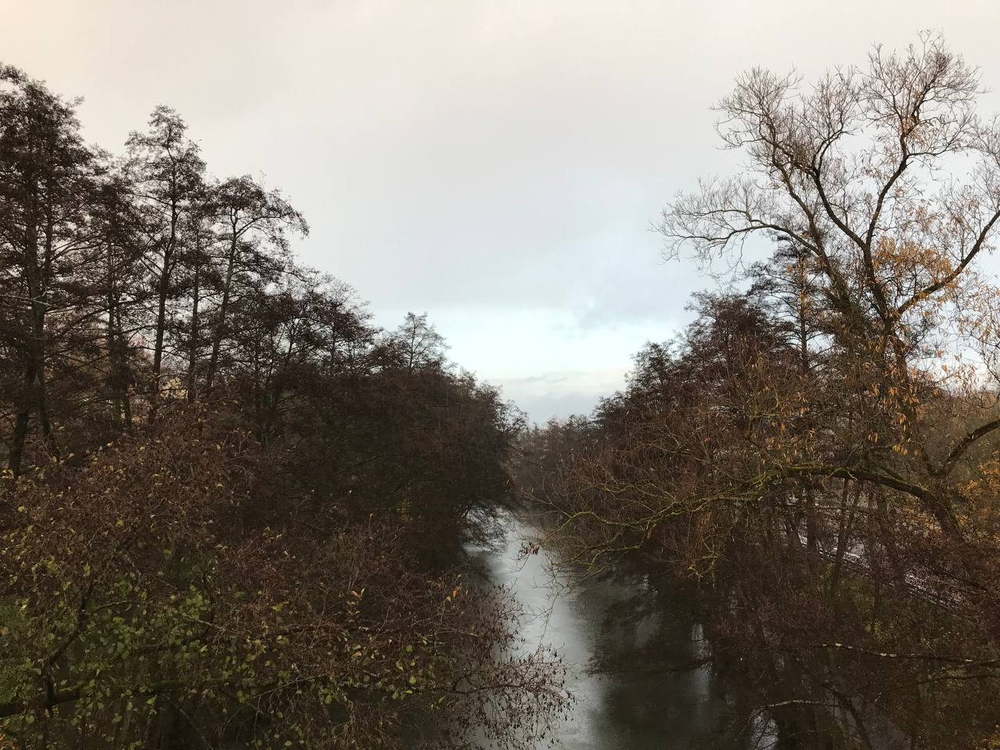
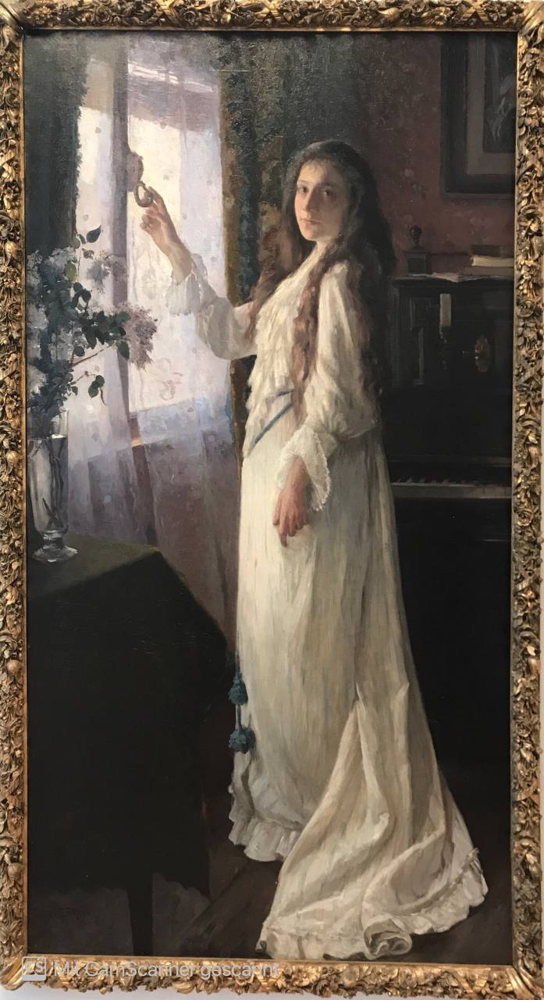
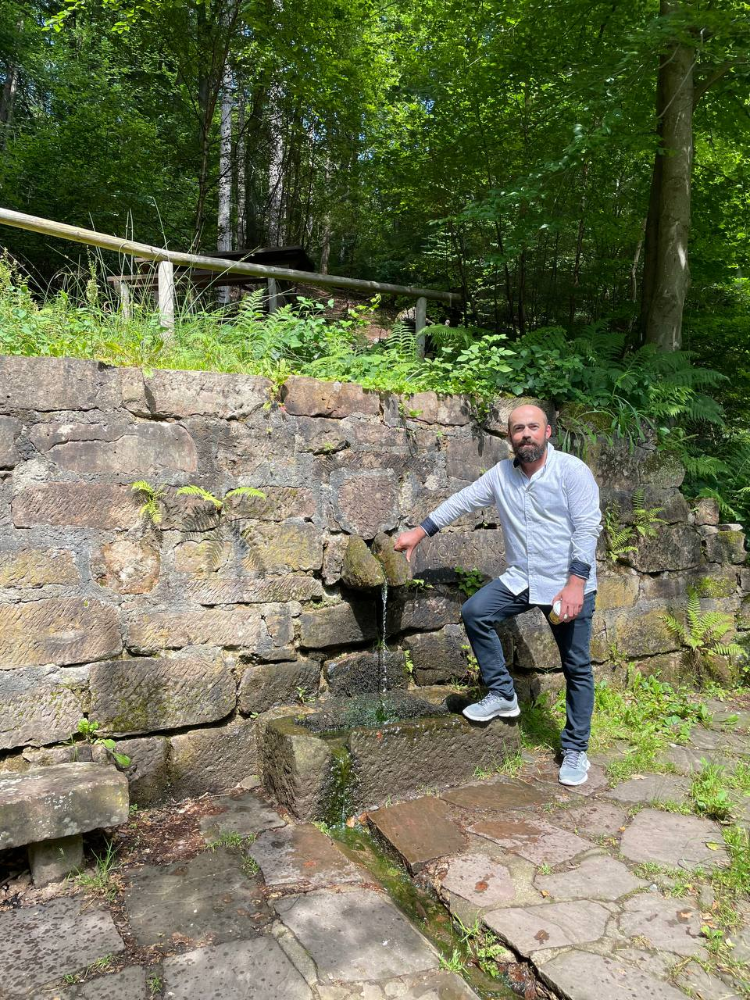
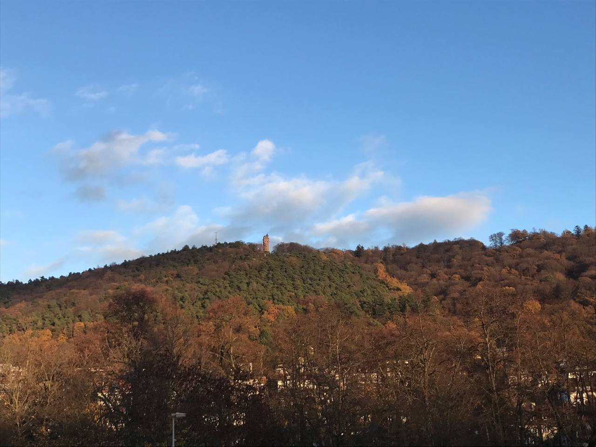

MY BLOG
Welcome to the blog of Mustafa
MY HOBBY GARDEN
Growing Peace and Vegetables, March 26, 2025
In my hobby garden, I find true peace and connection with nature. Every weekend, I dedicate hours to tending my vegetables and flowers, watching them grow from tiny seeds into beautiful living things. I've created raised beds for tomatoes and peppers, while maintaining a special section for herbs like basil, mint, and rosemary that add wonderful flavors to my cooking.
Gardening teaches me patience and persistence. Not everything grows as planned, but each challenge brings new learning. I especially enjoy experimenting with companion planting - discovering which plants help each other thrive. Recently, I've started composting, turning kitchen scraps into rich soil that completes the garden's natural cycle.
Beyond the practical aspects, my garden is my meditation space. The simple act of watering plants in the early morning sun brings a mindfulness that carries throughout my day. I want to share this journey with you - both the successes and the lessons learned along the way.
KASSEL'S MAGNIFICENT BERGPARK
A Journey Through German Romanticism, July 15, 2023
During my visit to Kassel, Germany, I was captivated by the magnificent Bergpark Wilhelmshöhe, home to the famous Hercules Monument. The expansive park, a UNESCO World Heritage site, features an awe-inspiring cascade that begins beneath the watchful eye of the Hercules statue and flows dramatically down to the serene lake below.
The lake itself is a perfect mirror on calm days, reflecting the surrounding lush greenery and the distant silhouette of Hercules standing proudly atop the hill. Walking around the water's edge, I was struck by how the carefully designed landscape creates a harmonious blend of natural beauty and human artistry—a hallmark of German Romanticism.
As the evening light bathed the scene in golden hues, visitors gathered along the shore, some sketching the picturesque view, others simply sitting in quiet appreciation. This remarkable water feature is not just ornamental but an engineering marvel of its time, part of a complex hydraulic system that has fascinated visitors for centuries.
My Mustafa
As I carefully pruned the tomato leaves in my garden this morning, I noticed how each snip revealed stronger stems underneath. The process of removing excess foliage allows better airflow and directs energy to fruit production. With the sun filtering through the trellis, I captured that perfect gardening moment - hands covered in soil, the sweet tomato scent in the air, and the promise of a bountiful harvest ahead. These simple gardening rituals connect me to seasons and cycles that modern life often obscures.
Popular Posts
-
 Baking Day
Baking Day
A day of baking and pastries -

Marburg Museum Tour
Exploring Marburg's museums -

Walk in nature
Walking adventure in nature -

Nature Photography
Photography in my willage
Tags
Travel New York London IKEA NORWAY DIY Ideas Baby Family News Clothing Shopping Sports Games